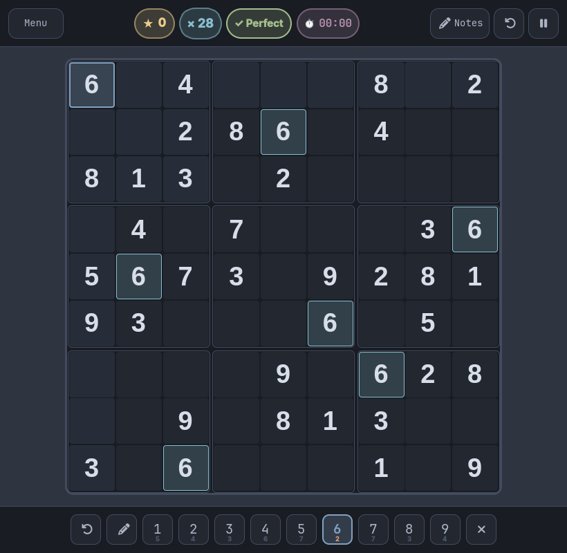
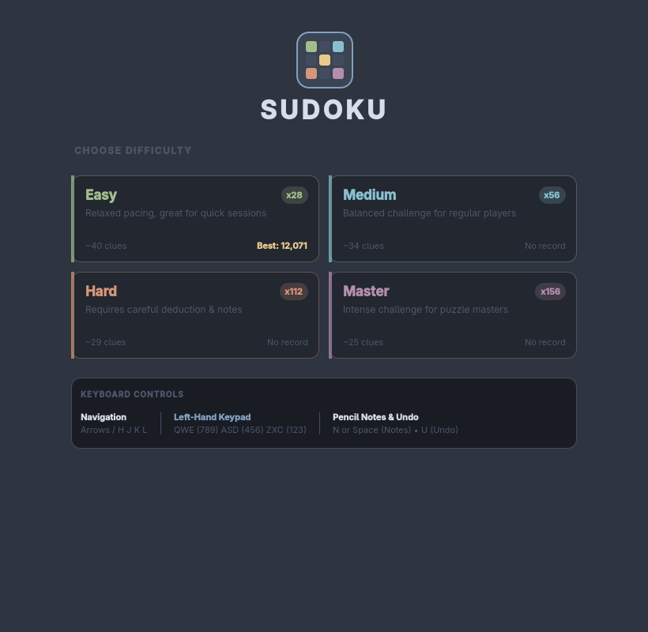
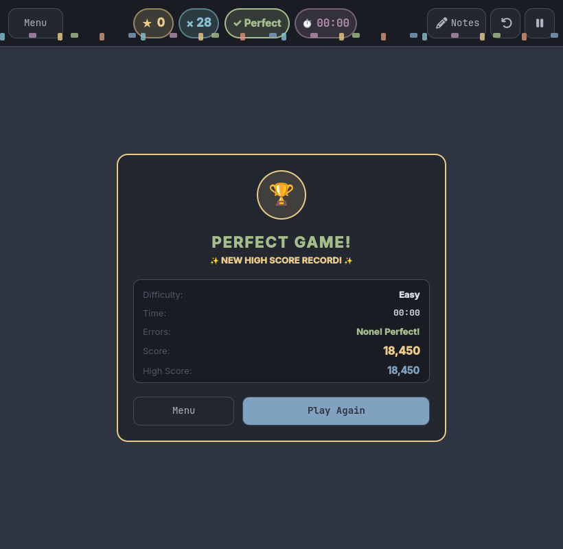

Adaptive Multipliers
Points multiply based on difficulty and speed — up to ×28 (Easy), ×56 (Medium), ×112 (Hard), or ×156 (Master). Mistakes reset your streak.
Dynamic multiplier engine
A modern, distraction-free Sudoku crafted in native Qt Quick for the Omarchy desktop. Featuring dynamic multipliers, smart candidate notes, dual-handed keyboard ergonomics, and instant state preservation.
Free & open source · 100% Offline · GPL-3.0 / MIT



Actual visual verification captures from the native Qt Quick application on Omarchy.
Designed around momentum and focus. Solve with rhythm, build massive multipliers, and chase personal high scores.
Points multiply based on difficulty and speed — up to ×28 (Easy), ×56 (Medium), ×112 (Hard), or ×156 (Master). Mistakes reset your streak.
Dynamic multiplier engine
Press N or Space to enter pencil mode. Add or clear candidate numbers without breaking your cadence.
Candidate grid tracking
Completing a row, column, or 3×3 block triggers a satisfying harmonic wave across the board in vibrant theme colors.
Qt Quick wave shaders
Press Escape or close the window at any time. Your board, timer, notes, and errors are saved instantly to local JSON storage.
Zero data loss
Sudoku shouldn't require reaching across your entire desk. Inspired by Peter Arnold's original elementary OS innovation, the left hand controls digits while the right hand navigates.
Hover or tap keys to preview mapping.
Your left hand rests naturally on QWE / ASD / ZXC, forming an exact 3×3 numpad layout. Your right hand stays anchored on Arrow keys, Vim keys (HJKL), or mouse.
No browser wrappers or web bloat. High frame-rate hardware acceleration via Qt Quick and PySide6, styled natively for the Omarchy desktop.
Choose from 4 balanced difficulties with color-coded accent stripes. Pick up unfinished games instantly with the Resume card.
Bold stat bubbles (Score, Multiplier, Accuracy, Timer), clean Font Awesome system icons, and remaining candidate digit counts.
Finishing a puzzle triggers multi-color confetti in all Omarchy theme accents with detailed stats and personal high score tracking.
Clone and install in seconds. The installer configures Python dependencies and registers a desktop launcher entry with the native SVG icon.
Requires Linux (Wayland or X11), Python 3.10+, and PySide6. Seamlessly integrates with Omarchy's colors.toml theme system.
git clone https://github.com/parnoldx/sudoku.git && cd sudoku && ./install.sh
sudoku in terminal.
Everything you need to know about the scoring mechanics, auto-save state, and offline privacy.
Every correct cell awards base points multiplied by your current streak multiplier (e.g. ×28 for Easy, up to ×156 for Master). A small time decay encourages brisk pace, while wrong moves penalize points and reset your accuracy streak.
Yes! Pressing Escape, clicking Menu, or quitting the application automatically saves your puzzle board, timer, notes, and error count. When you open Sudoku again, a prominent "Resume Unfinished Game" card appears on the welcome screen.
Never. Sudoku is 100% offline. Puzzle generation, validation, high score tracking, and theming run entirely on your local machine with zero external network requests.
Sudoku automatically detects ~/.config/omarchy/theme/colors.toml on launch. If you switch your Omarchy theme (such as Tokyo Night, Everforest, Catppuccin, or Nord), Sudoku inherits the background, foreground, accents, and selection colors natively.
High scores and saved states are stored safely in your standard user data folder at ~/.local/share/sudoku/ in lightweight JSON format.